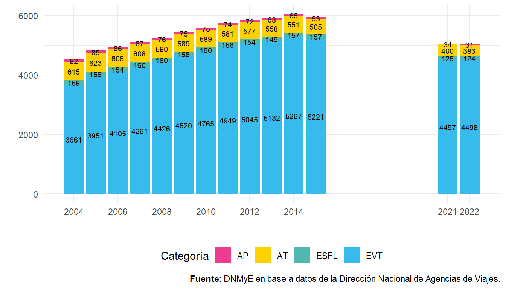
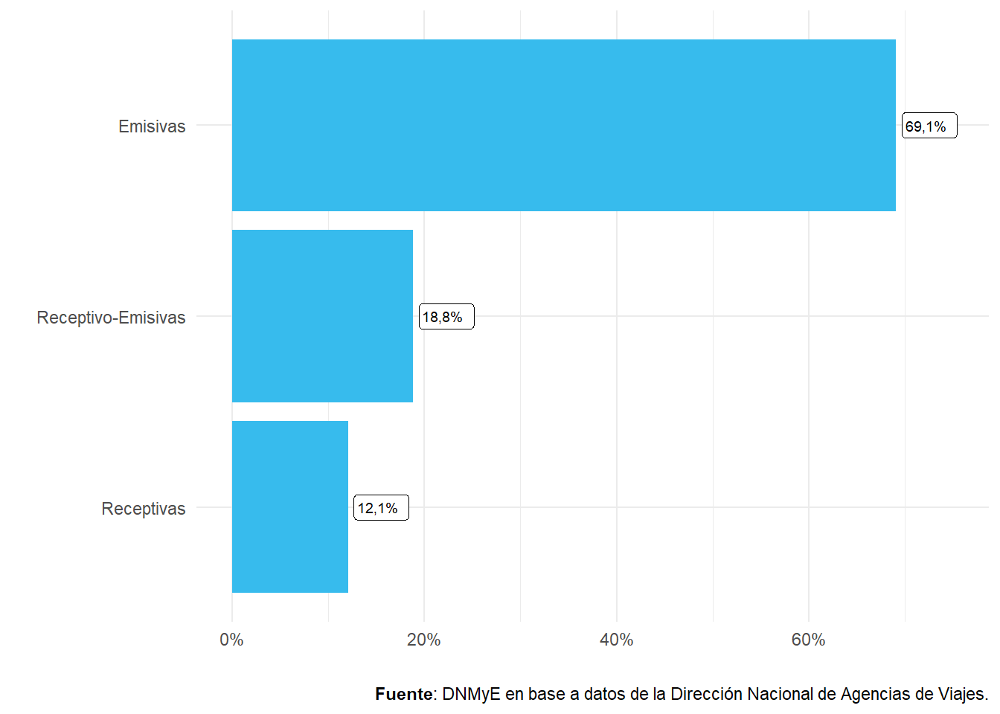
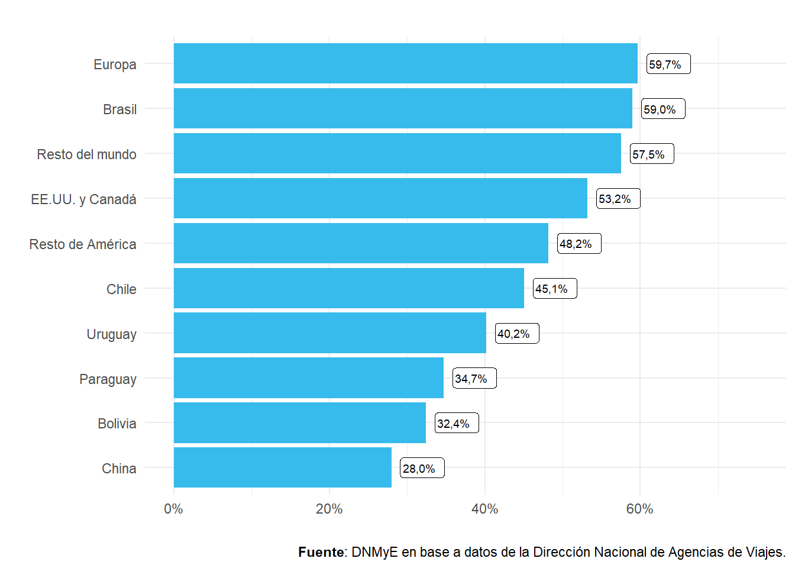
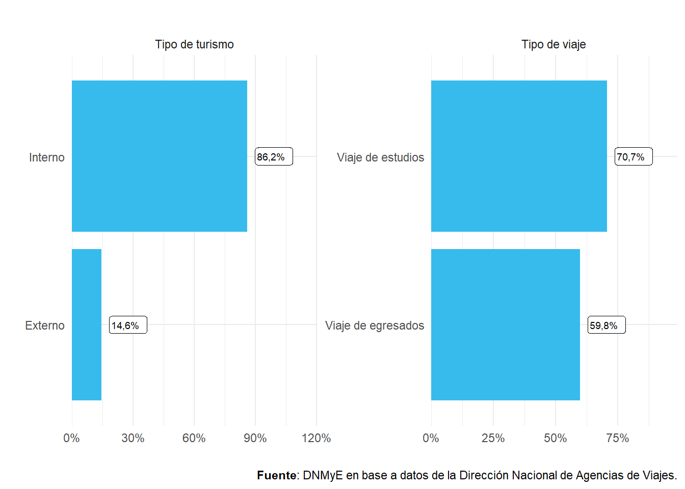
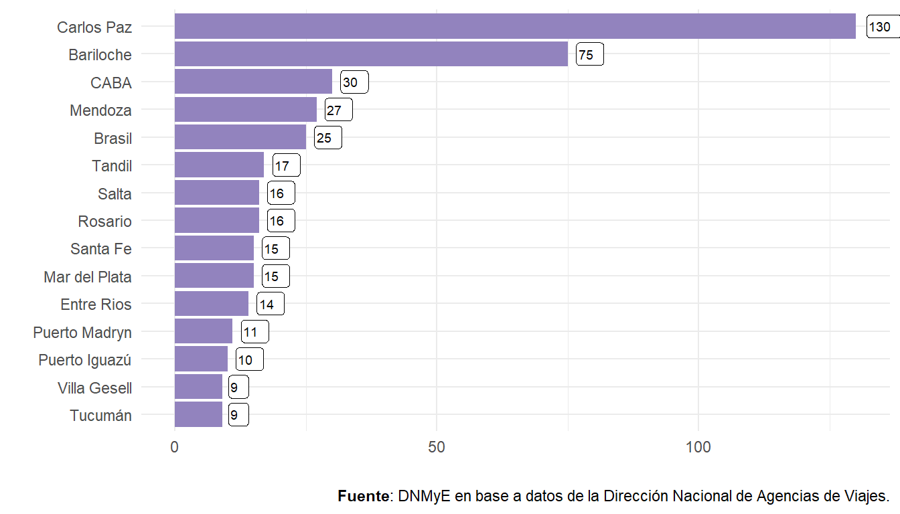

Capítulo 7 Agencias de Viajes
7.1 Introducción
En esta sección se presentan los datos de las agencias de viajes habilitadas en el país, en base al Registro de Agencias de Viajes de la Dirección Nacional de Agencias de Viajes. A partir de dichos registros administrativos, se caracteriza el sector de agencias de viajes que operan dentro del país, de acuerdo a su actividad principal y ubicación geográfica.
La ausencia de un registro formal que cumpla con lo dispuesto por la normativa9, y la falta de alternativas que hayan permitido contabilizar las agencias registradas de manera unívoca, hizo que no fuera posible reconstruir para el período 2016-2020 la información históricamente publicada en los anuarios. En 2021 se inició un proceso de recuperación registral, que implicó la digitalización de los trámites de la DNAV y la mejora de los procedimientos internos y los mecanismos de transparencia y seguridad informática que culminó con la actualización completa en la plataforma RLM del registro correspondiente al año 2022. La información que se presenta en esta sección refleja la transición mencionada, con una mayor desagregación en lo que refiere a distribución regional, tipo de operaciones de las agencias y los mercados emisores y de destinos de los viajes, entre otras variables.
7.2 Resumen del registro de agencias de viajes
Respecto del año 2021, el número de agencias registró una disminución del 0,4% en el año 2022, con un total de 5.036. El total se compone de 4.498 Empresas de viajes y turismo (EVT), 383 Agencias de turismo (AT), 31 Agencias de pasajes (AP) y 124 Empresas sin fines de lucro (ESFL).
Figura 7.1: Agencias de viajes habilitadas por tipo de categoría. Total país. Años 2004-2015/2021-2022.
Al analizar la distribución de agencias por categoría, se ve que de los 6.133 establecimientos el 14% corresponde a sucursales (846), mientras que el 86% restante son casas matrices (5.287).
Una agencia se identifica como una entidad que puede tener más de un establecimiento, por ejemplo, contar con un local en distintas localidades del país. Debido a esto, el total de establecimientos, sean sucursales o casas matrices, es mayor que el número de agencias únicas.
| Tipo | Total | EVT | AT | AP | ESFL |
|---|---|---|---|---|---|
| País | |||||
| Sucursales | 846 | 792 | 27 | 1 | 26 |
| Casas matrices | 5.287 | 4.737 | 372 | 31 | 147 |
| Total País | 6.133 | 5.529 | 399 | 32 | 173 |
| CABA | |||||
| Sucursales | 109 | 108 | /// | /// | 1 |
| Casas matrices | 1.247 | 1.109 | 89 | 11 | 38 |
| Total CABA | 1.356 | 1.217 | 89 | 11 | 39 |
| Centro | |||||
| Sucursales | 118 | 111 | 1 | /// | 6 |
| Casas matrices | 659 | 616 | 25 | /// | 18 |
| Total Centro | 777 | 727 | 26 | /// | 24 |
| Cuyo | |||||
| Sucursales | 54 | 53 | /// | /// | 1 |
| Casas matrices | 404 | 393 | 9 | /// | 2 |
| Total Cuyo | 458 | 446 | 9 | /// | 3 |
| Litoral | |||||
| Sucursales | 167 | 147 | 8 | /// | 12 |
| Casas matrices | 894 | 776 | 58 | 6 | 54 |
| Total Litoral | 1.061 | 923 | 66 | 6 | 66 |
| Norte | |||||
| Sucursales | 80 | 77 | 3 | /// | /// |
| Casas matrices | 391 | 363 | 24 | /// | 4 |
| Total Norte | 471 | 440 | 27 | /// | 4 |
| Patagonia | |||||
| Sucursales | 130 | 126 | 4 | /// | /// |
| Casas matrices | 489 | 458 | 20 | 2 | 9 |
| Total Patagonia | 619 | 584 | 24 | 2 | 9 |
| Prov. de Buenos Aires | |||||
| Sucursales | 188 | 170 | 11 | 1 | 6 |
| Casas matrices | 1.181 | 1.001 | 146 | 12 | 22 |
| Total Prov. de Buenos Aires | 1.369 | 1.171 | 157 | 13 | 28 |
| Sin dato | |||||
| Casas matrices | 22 | 21 | 1 | /// | /// |
| Total Sin dato | 22 | 21 | 1 | /// | /// |
| Fuente: DNMyE en base a datos de la Dirección Nacional de Agencias de Viajes. | |||||
CABA encabeza el ranking de regiones según cantidad de agencias (23,3%), seguida de Prov. de Buenos Aires (22,2%) y el Litoral (16,9%), manteniendo participaciones similares al año previo.
Figura 7.2: Agencias de viajes habilitadas por región. Total país. Año 2022.

En línea con lo mencionado, al desagregar por provincia se observa que CABA y Buenos Aires encabezan el ranking de agencias, seguidas de Córdoba y Santa Fe.
Figura 7.3: Agencias de viajes habilitadas por provincia. Total país. Año 2022.

7.3 Tipos de turismo y mercados operados
Al clasificar a las agencias por tipo de turismo que realizan, se encuentra que la mayoría opera turismo emisivo (78,6%). Cabe aclarar que, en este caso, las categorías no son excluyentes entre sí, es decir, que una misma agencia puede hacer turismo emisivo, interno y receptivo.
Figura 7.4: Agencias de viajes habilitadas según tipo de turismo. Año 2022.

Al poner el foco en aquellas agencias que operan turismo internacional (4.499), se puede analizar la distribución para cada categoría, es decir, cuántas operan solo receptivo, solo emisivo o ambas.
Como se visualiza en el siguiente gráfico, existe una mayor proporción de agencias dedicadas únicamente al turismo emisivo.
Figura 7.5: Agencias de viajes habilitadas que operan turismo internacional según modalidad. Año 2022.
En cuanto a la distribución de agencias receptivas según región que operan, se observa que Europa encabeza el ranking con un 59,7%, seguida de Brasil (59,0%) y Resto del mundo (57,5%).
Figura 7.6: Agencias de viajes habilitadas que operan turismo receptivo según mercado. Año 2022.
TURISMO ESTUDIANTIL:
En cuanto al segmento de turismo estudiantil, del total de agencias registradas, un 4,7% declaró operar con este mercado (239). Esto representa un aumento del 6,2% respecto del año 2021.
| Año | Agencias habilitadas | Var i.a. % |
|---|---|---|
| 2007 | 176 | - |
| 2008 | 216 | 22,7% |
| 2009 | 235 | 8,8% |
| 2010 | 239 | 1,7% |
| 2011 | 255 | 6,7% |
| 2012 | 276 | 8,2% |
| 2013 | 294 | 6,5% |
| 2014 | 289 | −1,7% |
| 2015 | 308 | 6,6% |
| 2021 | 225 | - |
| 2022 | 239 | 6,2% |
| Nota: no se cuenta con datos del Registro de Agencias de Viajes para el período 2016-2020 | ||
| Fuente: DNMyE en base a datos de la Dirección Nacional de Agencias de Viajes. | ||
En relación al tipo de turismo y de viajes ofrecidos, del total de agencias de viajes estudiantiles un 86,2% opera con destinos nacionales, mientras que un 14,6% comercializa viajes al exterior. Por otra parte, un 70,7% organiza o comercializa viajes de estudios, mientras que un 59,8% distribuye viajes de egresados. Respecto del 2.021 estos valores presentan disminuciones para todas las categorías:
Figura 7.7: Agencias de viajes estudiantiles según tipo de turismo y de viajes ofrecidos. Año 2022.
Por último, el registro de agencias de turismo estudiantil permite conocer el ranking de destinos operados por este segmento, el cual se encuentra encabezado por Villa Carlos Paz, San Carlos de Bariloche y CABA.
Figura 7.8: Turismo Estudiantil. Agencias de viajes por destinos operados. Top 15 destinos. Año 2022.
7.4 Recursos disponibles
Los datos que se muestran en este capítulo forman parte del Sistema de Información Turística de la Argentina (SINTA) https://www.yvera.tur.ar/sinta/ de la Dirección Nacional de Mercados y Estadística (DNMyE). Los mismos se presentan a través de distintos formatos:
Reporte: Reporte de actualización anual con la información más destacada del sector de agencias de viajes.
Documento de trabajo: Informe que caracteriza el sector de agencias de viajes en relación a su distribución geográfica y el tipo de turismo con el que operan (año 2021).
Con la creación del sistema Gestión Documental Electrónica (GDE), y mediante el Decreto Nº 1.306/16, se implementó el módulo Registro Legajo Multipropósito (RLM) como único medio de administración de los registros de las entidades. Además, se aprobó la implementación de la plataforma Trámites a Distancia (TAD) como medio de interacción del ciudadano con la administración, a través de la recepción y remisión por medios electrónicos de presentaciones, solicitudes, escritos, notificaciones y comunicaciones, entre otros, lo que permite la trazabilidad de los datos.↩︎